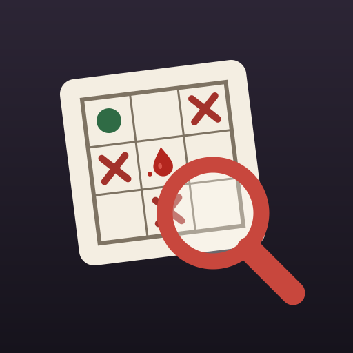

Cinayet Defteri
Kim, neyle, nerede? Mantıkla çözülen cinayet bulmacaları
Cinayet Defteri’nde her vaka küçük bir mantık bulmacasıdır. Şüphelileri, silahları ve mekânları tanırsın, ipuçlarını okursun ve dedektif ızgarasını doldurarak katili, cinayet silahını ve yerini bulursun. Her gün herkese aynı yeni bir vaka gelir.
İletişim
Soru, öneri ya da bir hata için bize yaz:
Sık sorulanlar
Izgara nasıl doldurulur?
Bir hücreye bir kez dokununca ✕ (bu ikisi aynı kişiye ait olamaz), iki kez dokununca ● (aynı kişiye ait) konur; üçüncü dokunuş siler. Basılı tutmak doğrudan ● koyar. Uygulamadaki “Nasıl oynanır” sekmesinde örnekli anlatım var.
Bir vakada takıldım. Çözümü olmayan bir vaka mı?
Hayır. Her vaka, yalnızca ipuçları ve ızgara mantığıyla, tahmin yürütmeden tek bir çözüme ulaşacak biçimde üretilir ve uygulamaya girmeden önce bu denetlenir. Takıldığında “İpucu” düğmesi hatalı işaretlerini gösterir ya da şu an yeni bir şey söyleyen ipucunu işaret eder.
Yıldızlar nasıl hesaplanıyor?
Her vaka üç yıldızla başlar ve her yanlış suçlama bir yıldız götürür; çözdüğün her vakada en az bir yıldız kalır. Takılırsan ipucu alabilirsin: kısa bir reklam izleyerek (yıldızın gitmez) ya da bir yıldız karşılığında. İpucu ızgarada bir kareyi açar ve kilitler. Pes edip çözümü görürsen vaka yıldızsız kapanır ama sonraki vaka yine açılır.
Günlük seri bozuldu.
Seri, günün vakasını kendi gününde çözdüğün ardışık günleri sayar. Geçmiş günlerin vakalarını sonradan da çözebilirsin ama bunlar seriye eklenmez.
Hesap açmam gerekiyor mu? İnternet gerekiyor mu?
Hayır. Hesap, e-posta ya da şifre yok. Vakalar telefonunda üretilir; oyun internetsiz de oynanır (o zaman reklam bandı görünmez). İlerlemen yalnızca telefonunda saklanır.
Neden reklam var?
Oyunu ücretsiz tutabilmek için ekranların altında küçük bir reklam bandı var. Araya giren tam ekran reklam yok; tam ekran reklam yalnızca ipucu için sen isteyince açılır.
Oyunu İngilizce oynayabilir miyim?
Evet. Oyun telefonunun diliyle açılır; Ayarlar → “Dil”den Türkçe ya da English seçebilirsin. Vakalar iki dilde de aynıdır.
Telefon değiştirince ilerlemem taşınır mı?
Şimdilik hayır; ilerleme yalnızca o telefonda tutulur.